Yuheng Wang · Fall 2026
Webpage: cal-cs184-student.github.io/hw3-yuh23-team-writeup/
This project builds a diffuse path tracer from camera rays to adaptively sampled global illumination. Camera rays first locate visible surfaces through triangle and sphere intersection routines. A bounding volume hierarchy accelerates those queries, direct-light estimators compute illumination from emitters, and recursive BSDF sampling accounts for light reflected between surfaces. Adaptive sampling then allocates more camera samples to pixels whose estimates have not yet stabilized. Part 6 extends the renderer with SAH splitting, bilateral denoising and oriented bounding boxes, one project from each challenge level.
The results illustrate four distinct sources of improvement. BVH traversal reduces the cost of finding intersections without changing the rendered image. Sampling lights directly reduces variance compared with drawing directions uniformly over a hemisphere. Additional light bounces change the illumination itself, filling shadows and carrying color between surfaces. Finally, adaptive sampling reduces unnecessary work on stable pixels while retaining more samples in difficult regions.
Implementation challenges included numerically stable intersection tests, preserving the nearest hit during BVH traversal, and accounting correctly for sampling probabilities. Ray-interval checks and focused geometry tests addressed the intersection cases. A corrected area-light probability density and probability compensation for Russian Roulette addressed lighting estimates. Controlled transport tests checked bounce accumulation, while variance and sample-count tests checked the adaptive stopping rule. The following sections document the algorithms, measured comparisons, and rendered results.
For the Part 1 images, each pixel is estimated using 16 camera rays. For each ray, a uniform random offset within the pixel is added to its bottom-left coordinate. Dividing the resulting coordinates by the image width and height produces normalized image coordinates. The colors returned by tracing these rays are averaged and stored in the pixel buffer. Sampling multiple positions within a pixel smooths boundaries between objects.
The camera maps normalized coordinates (x, y) to a virtual sensor plane at z = −1. Its sensor position is ((2x − 1) tan(hFov/2), (2y − 1) tan(vFov/2), −1), with field-of-view angles converted from degrees to radians. The camera-to-world matrix rotates this vector, and the result is normalized to produce the ray direction. The ray starts at the camera's world-space position, with min_t and max_t initialized to the near and far clipping limits.
For Part 1, the supplied scene traversal checks every primitive. Each accepted hit reduces the ray's max_t, so a farther surface cannot replace a nearer hit. The intersection record stores the distance, normal, primitive, and material. The supplied normal-shading function converts a normal n to RGB using 0.5n + 0.5; the output image also passes through the renderer's display conversion. These colors visualize surface orientation, rather than physical lighting. Rays that miss these scenes return black.
The implementation uses the Möller–Trumbore algorithm. Let e1 = p2 − p1 and e2 = p3 − p1. A point in the triangle can be expressed as p1 + u e1 + v e2. Equating this with the ray o + t d gives the three unknowns t, u, and v. Cross and dot products solve this system without explicitly inverting a matrix.
A near-zero determinant indicates a parallel ray or degenerate triangle and is rejected. The tolerance is scaled by the lengths of both edges and the ray direction. A hit must satisfy u ≥ 0, v ≥ 0, and u + v ≤ 1, placing it inside the triangle, and t must lie within the ray's current interval. Both sides of a triangle are accepted. At a valid hit, the vertex normals are interpolated with weights (1 − u − v, u, v), then normalized. Both intersection interfaces update max_t; the boolean interface reuses the full intersection calculation.
Substituting the ray into the sphere equation gives a t² + 2b t + c = 0, where a = d·d, b = (o − center)·d, and c = |o − center|² − radius². A negative discriminant means no intersection. The roots are computed with a cancellation-resistant quadratic formula and sorted. The smaller valid root is selected; if it is before min_t, the larger root is tried. This handles rays starting inside spheres and rays whose entry point is clipped. The normal is the normalized vector from the sphere center to the hit point.
All three images below are original 480 × 360 PNG files saved directly by the renderer using its -f option, with 16 samples per pixel and four worker threads. The image files have not been resized or converted.
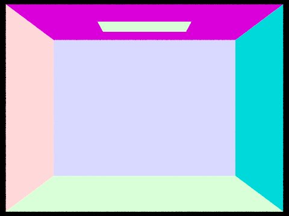
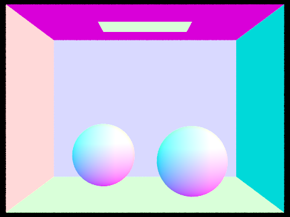
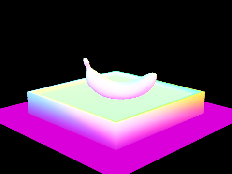
The project rebuild succeeded. Focused checks passed for camera center/corner rays, camera translation and rotation, normalized directions, and clipping limits. Triangle checks covered front and back hits, edge and vertex hits, parallel rays, degenerate triangles, missed triangles, clipped hits, non-unit ray directions, and interpolated normals. Sphere checks covered entry and exit roots, rays starting inside, tangency, misses, clipped entry points, and non-unit directions. The three saved renders were also visually inspected.
The BVH groups nearby primitives into a binary tree so that an intersection test can reject entire groups whose bounding boxes the ray misses. At each recursive call, the implementation computes a bounding box enclosing all primitives in the current range, together with a second box enclosing their bounding-box centroids. If the range contains at most four primitives, it becomes a leaf storing the corresponding iterator range.
Otherwise, the algorithm selects the axis with the greatest centroid extent and partitions the primitives at the median centroid on that axis using std::nth_element. It then recursively constructs the two children. A median split balances the primitive counts and guarantees two nonempty children, including when many primitives share the same centroid. This prevents the infinite recursion that a spatial midpoint split can cause when all primitives fall on one side. The heuristic is inexpensive and gives a balanced tree, although it does not explicitly minimize bounding-box overlap or traversal cost as a surface-area heuristic would.
Bounding-box intersection uses the slab method. Each axis supplies the interval of ray parameters between the box's two planes. The two values are exchanged when necessary, and the intersection of the three intervals is clipped to both the caller's interval and the ray's valid interval. An empty interval means a miss. Equal entry and exit times are accepted, preserving hits on flat boxes and boundaries. For a zero direction component, the ray must already be inside that axis's slab; this explicit case avoids division by zero and undefined boundary arithmetic.
Traversal first rejects nodes whose bounds do not intersect the ray. At a leaf, it tests only the primitives in that leaf. The boolean has_intersection routine stops at the first valid primitive hit. The nearest-hit intersect routine checks both potentially intersected children, visiting the child with the earlier box entry first. A primitive hit shortens ray.max_t; the second child's bounds are then rechecked against that shorter interval. This preserves the closest hit while avoiding work on nodes that are now entirely behind it.
The following original PNGs were saved directly with the renderer's -f option at 480 × 360, using 16 samples per pixel and one rendering thread. No image files were resized or converted. The large meshes are practical to render interactively with BVH acceleration.
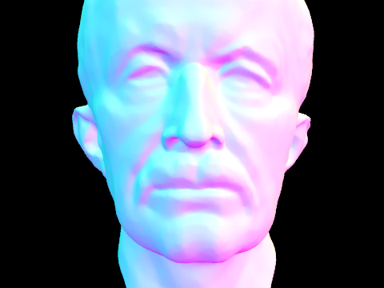
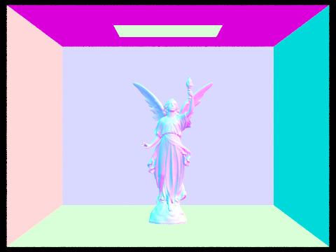
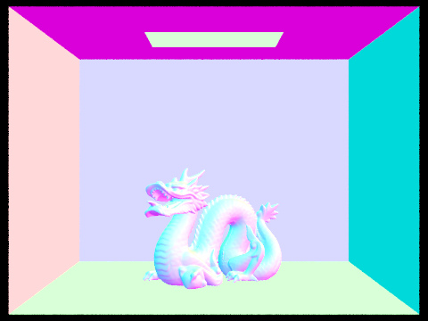
The original Part 1 executable was preserved before the BVH changes. Both versions rendered the same three scenes at 480 × 360, with one sample per pixel and one worker thread, on the same Apple Silicon Mac. Each measurement was repeated three times, with runs performed sequentially. The table reports the median of the renderer's reported rendering times; scene loading, BVH construction, and file saving are not included in these rendering-time measurements. A single thread avoids contention in the starter's shared diagnostic counters and makes the comparison reproducible.
| Scene | Primitives | Without BVH (s) | With BVH (s) | Speedup | BVH primitive tests/ray |
|---|---|---|---|---|---|
| cow.dae | 5,856 | 2.8981 | 0.0284 | 102.0× | 3.13 |
| beetle.dae | 7,558 | 3.6314 | 0.0326 | 111.4× | 3.78 |
| teapot.dae | 2,464 | 1.2838 | 0.0363 | 35.4× | 4.18 |
BVH acceleration reduced the median rendering time from 2.8981 s to 0.0284 s for cow (102.0×), from 3.6314 s to 0.0326 s for beetle (111.4×), and from 1.2838 s to 0.0363 s for teapot (35.4×). Without acceleration, every ray tests all primitives, whereas the BVH rejects most groups before reaching a leaf. The smaller teapot scene benefits less: there is less brute-force work to eliminate, and its geometry leads to more primitive tests per ray than the other two scenes. These measurements illustrate that primitive count alone does not determine BVH performance; spatial overlap and the camera's view also affect traversal. The first-run PNGs were byte-for-byte identical between the two executables for all three scenes, confirming unchanged rendered results for these comparisons.
The project rebuilt successfully. Tests compared both nearest-hit and any-hit BVH queries against brute force for 5,000 seeded rays through a mixed scene of triangles and spheres; all comparisons passed. Additional checks covered parallel rays, clipping limits, rays starting inside a box, boundary contacts, flat and empty boxes, an empty scene, and coincident primitive centroids. Structural checks confirmed that all primitives occur once across the leaves, that no leaf exceeds four primitives, and that each parent encloses its children. All three large-scene images were visually inspected.
The Lambertian diffuse BSDF evaluates to reflectance / π. It is independent of the incoming and outgoing directions within the reflection hemisphere; the cosine factor enters the lighting integral separately. Its sampling method uses the provided cosine-weighted hemisphere sampler and returns that sample's probability density and BSDF value. Zero-bounce radiance is the emission of the first surface hit by the camera ray. The final Part 3 estimate adds zero-bounce emission to one-bounce reflected light; with maximum ray depth zero, only emission is returned.
At the visible surface, an orthonormal local frame is constructed with its z-axis aligned to the normal. The implementation draws N = number of lights × samples per area light directions uniformly over the local hemisphere, with density p(ω) = 1 / (2π). Each direction is rotated into world space and traced from the hit point. Setting the ray's minimum distance to EPS_F avoids a numerical self-intersection. The closest intersected surface contributes its emission, so a nonemissive blocker contributes zero rather than allowing light to pass through it.
For each sample, the contribution is f(ωo, ωi) Le cos θ / p(ωi), where cos θ is the sampled local direction's z component. Summing these values and dividing by N gives the outgoing-radiance estimate. Most directions miss the emitter or hit nonemissive surfaces, so a small light can produce substantial noise at low sample counts. This method cannot effectively sample a point light, whose direction has zero probability under continuous hemisphere sampling.
The second estimator samples each light directly using sample_L, which returns incoming radiance, a world-space direction, distance, and solid-angle probability density. Directions below the surface are rejected. A shadow ray spans the interval from EPS_F to distance-to-light − EPS_F, excluding both the starting surface and the emitter itself. If the BVH finds no blocker on that segment, the sample contributes f(ωo, ωi) Li cos θ / pdf. Samples are averaged separately for each light, then those light estimates are summed. Delta lights are sampled once because repeating the same deterministic direction provides no benefit.
The one-bounce wrapper selects hemisphere sampling when the -H flag is set, and light sampling otherwise. During validation, the command-line parser was simplified so -H is a genuine no-argument switch, removing its previous argument-index compensation. The area-light PDF also used a non-unit vector in its cosine term; this was corrected. The corrected area-to-solid-angle conversion uses distance² / (area × |nlight · ω|), with unit vectors in the dot product.
Each pair below uses the same scene and camera, 480 × 360 resolution, 16 samples per pixel, 8 light samples, maximum ray depth 1, and one worker thread. The PNG files were saved directly by the renderer and have not been resized or converted.
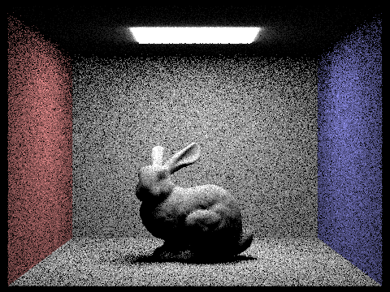
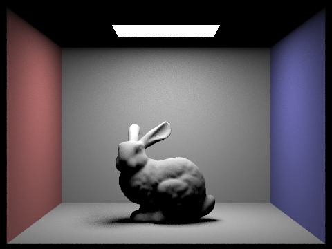
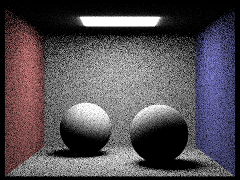
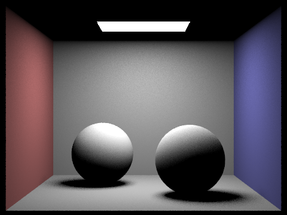
At the same sample settings, directly sampling the area light produces smoother illumination and cleaner shadow boundaries than uniform hemisphere sampling. Hemisphere sampling wastes many trials on directions that provide no direct light, producing conspicuous speckles, especially on surfaces from which the light occupies a small solid angle. Importance sampling concentrates trials on the emitter; it still has variance because different sampled points can be visible or occluded, particularly in the penumbra. The two estimators target the same direct-reflection integral when their emitter models agree, but finite sampling and the starter's two-sided emissive geometry versus directional area-light model can create visible differences near the light. Neither method adds indirect interreflection at this stage, so regions without a direct view of the light remain dark.
The following bunny renders hold the camera, resolution (480 × 360), pixel samples (1), and maximum depth (1) fixed. Only the number of area-light samples changes: 1, 4, 16, and 64. All four use light importance sampling, not uniform hemisphere sampling.
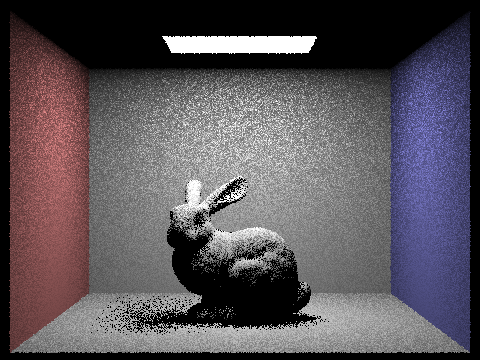
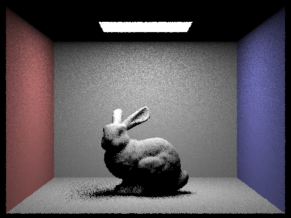
With one light sample, visibility is estimated from one point on the emitter, so the floor and shadow transition show strong grain. Increasing to 4, 16, and 64 samples progressively stabilizes the estimate of the visible fraction of the light and smooths the penumbra. The physical shadow remains soft because the emitter has finite area. Increasing light samples does not remove aliasing along object silhouettes when camera sampling remains fixed at one sample per pixel.
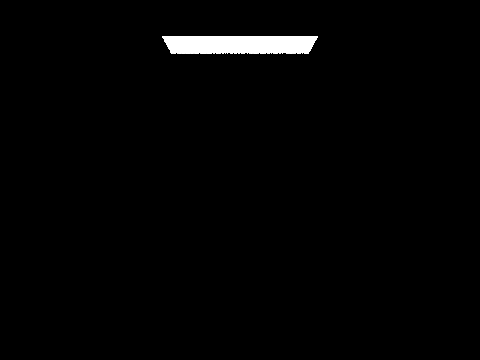
The project rebuild succeeded. Focused checks verified the Lambertian BSDF and cosine-weighted sampling PDF, direct point-light response, rejection of lights behind the surface, shadow occlusion, and exclusion of blockers beyond a light. A diffuse surface inside a constant-emission sphere matched the analytic hemisphere integral within the test tolerance. Additional checks verified zero-bounce emission, the maximum-depth-zero path, and the corrected area-light PDF.
Global illumination extends direct lighting by tracing light that has reflected from other surfaces. At a camera-visible hit, the integrator evaluates direct light and samples one additional direction from the surface BSDF. The diffuse sampler uses a cosine-weighted hemisphere distribution, with pdf = cos θ / π and BSDF = reflectance / π. The sampled direction is transformed from the local normal frame into world space, and a new ray starts at the hit point with minimum distance EPS_F and one less remaining bounce.
If this ray intersects the scene, the integrator recursively estimates the light arriving at that next surface. The returned radiance is weighted by BSDF × cos θ / pdf, and also divided by the continuation probability when Russian Roulette is active. For a diffuse surface with cosine-weighted sampling, the BSDF/cosine/PDF factors simplify to the reflectance. A ray that misses the scene contributes no indirect light in these enclosed Cornell-box scenes.
Direct-light sampling already estimates paths from an emitter to the current surface, so emission is not added again when a BSDF-sampled continuation happens to hit an emitter. Camera-visible emission is handled once by the top-level zero-bounce term. This avoids counting the same direct-light path through both estimators.
Camera rays begin with depth equal to max_ray_depth. At zero depth, only camera-visible emission is returned. At depth one, the reflected-light estimator returns direct illumination without another continuation. When isAccumBounces is true, the integrator adds direct light at every visited surface, accumulating bounce orders up to the depth limit. When it is false, intermediate direct terms are suppressed and direct lighting is evaluated only at the terminal surface, isolating the requested bounce order. Camera-visible emission is also suppressed in isolated-bounce mode for orders greater than zero.
The first indirect continuation is always traced when the maximum depth exceeds one. Subsequent continuations survive with probability 0.65 and terminate with probability 0.35. Surviving contributions are divided by 0.65, preserving their expectation. The maximum depth remains a hard upper bound: Russian Roulette itself does not bias the finite-depth estimator, but truncating paths at a finite maximum depth still excludes longer-path contributions. A maximum of 100 lets the random termination dominate in practice for these diffuse scenes.
The fixed-depth and indirect-only experiments use separate source variants; the final code retains Russian Roulette. All Part 4 figures use fixed sample counts, without adaptive stopping. REPRODUCTION.md supplies the exact source changes and flags; pass -a 0 0 to disable adaptive sampling in the final executable.
All images in this section are original 480 × 360 PNGs saved through the renderer's -f option. The global-illumination images below use 1,024 camera samples per pixel. Bunny uses one area-light sample and fixed depth 5; the spheres use four area-light samples and Russian Roulette with maximum depth 5.
These two bunny views use the same camera, 1,024 samples per pixel, and one area-light sample. The direct-only view isolates the first reflected bounce. The indirect-only view includes bounce orders 2 through 5 using Russian Roulette, with both camera-visible emission and the initial direct-light term suppressed.
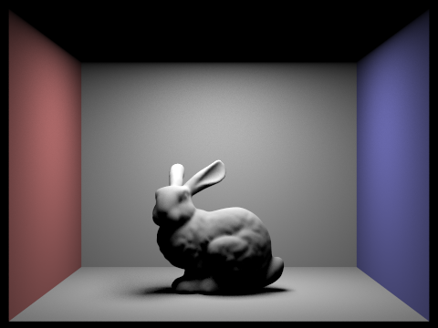
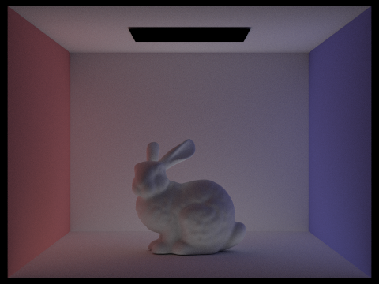
Direct illumination produces the strongest highlights and the shadow cast by the bunny beneath the area light. Indirect illumination fills regions that cannot directly see the emitter and carries color from the red and blue walls onto nearby surfaces. Combining these terms brightens the bunny’s shadowed surfaces and produces smoother illumination transitions.
Each pair below uses CBbunny.dae, 1,024 samples per pixel, one area-light sample, and the fixed-depth snapshot without Russian Roulette. The first image isolates bounce order m (-o 0); the second accumulates orders 0 through m (-o 1).
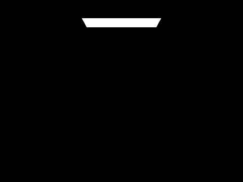

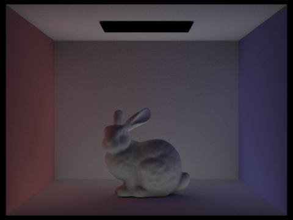

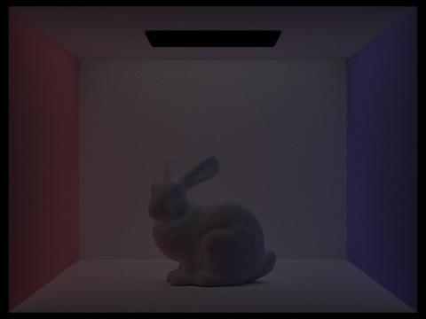
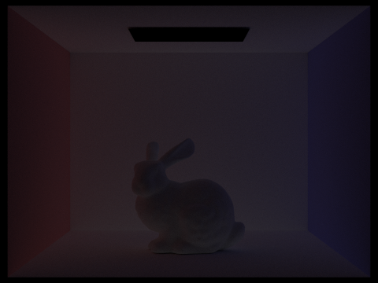
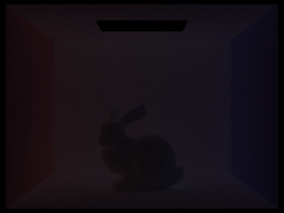
The zeroth bounce is the visible emitter, and the first bounce is directly reflected light. The second bounce adds light that has reflected from one other surface before reaching the visible surface, introducing color bleeding and filling portions of the direct shadow. The third bounce spreads that indirect illumination further through the room and into areas reached only through additional reflections. At m = 0 both modes show only the emitter. At m = 1 accumulation also retains the emitter. At m = 2 and 3 it adds the indirect terms to the existing direct light. At m = 4 and 5 the isolated terms are darker and their effect on the accumulated image is subtler, because each diffuse reflection absorbs energy. Compared with a basic rasterized view using only direct lights, these additional paths create interreflection and colored indirect illumination; rasterization can approximate such effects with extra techniques, but they do not arise from direct shading alone.
The following views use CBbunny.dae, 1,024 samples per pixel, one area-light sample, accumulated bounces, and Russian Roulette with maximum depths 0, 1, 2, 3, 4, and 100. The first indirect bounce is guaranteed when the maximum depth is greater than one.

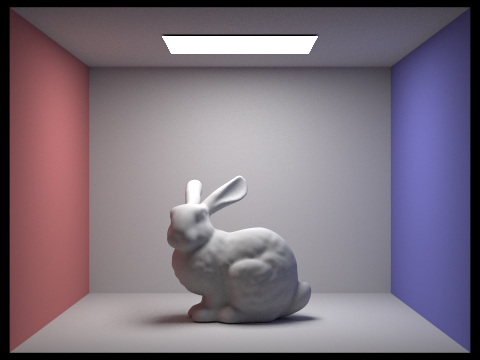
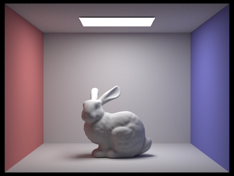
Increasing the depth from one to two introduces the first indirect contribution. Further increases add weaker higher-order transport. At depth 100, most paths still terminate much earlier through Russian Roulette, while the surviving paths estimate longer-path contributions with the appropriate probability correction. The high depth limit does not force every camera ray to take 100 bounces.
These sphere renders hold the scene, camera, four samples per area light, maximum depth 5, and Russian Roulette configuration fixed. Camera sampling varies across 1, 2, 4, 8, 16, 64, and 1,024 samples per pixel.
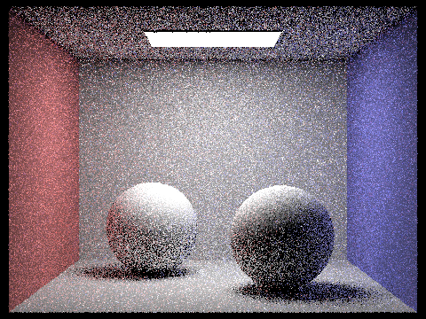
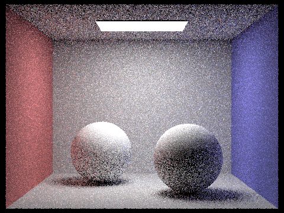
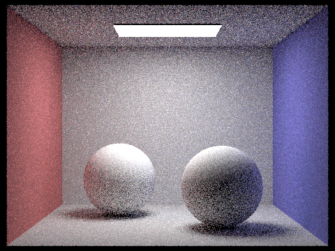
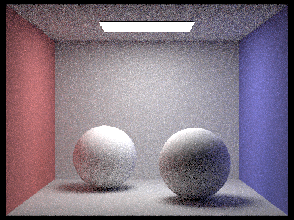
Low camera-sample counts produce strong Monte Carlo noise because each pixel averages only a few sampled light paths. Increasing the sample count stabilizes indirect illumination, smooths shadow transitions, and improves silhouette antialiasing. The 1,024-sample result is substantially cleaner, although finite-sample noise can remain. With independent finite-variance samples, standard error decreases approximately with the inverse square root of the sample count, so reducing noise further requires increasingly more work.
The project rebuilt successfully after restoring the final integrator. A controlled transport fixture verified exact bounce-0, bounce-1, and bounce-2 values in both isolated and accumulated modes, including suppression of duplicate secondary emission. A 100,000-path test at depth 5 matched the analytic expectation with Russian Roulette enabled. A depth-100 test produced finite estimates and matched its expected transport sum within tolerance. The required images were inspected before inclusion in this report.
Uniform sampling spends the same number of camera rays on every pixel, even though some pixels converge much sooner than others. Adaptive sampling estimates uncertainty separately for each pixel and stops sampling pixels whose estimates have stabilized. The remaining computation is concentrated on pixels with more variable light paths, such as shadowed surfaces and geometry boundaries.
After n samples, the implementation computes the mean illuminance μ and unbiased sample variance σ². The estimated 95% confidence-interval half-width is I = 1.96 × √(σ² / n). Sampling stops when I ≤ maxTolerance × μ, or when the maximum sample count is reached. This is the assignment’s approximate statistical convergence criterion; it is not a guarantee that the pixel has no remaining error.
For each camera sample, raytrace_pixel traces the global-illumination ray, adds its RGB radiance to a running sum, and uses illum() for the scalar convergence statistic. Welford’s running update maintains the mean and the sum of squared deviations M₂: δ = x − μ, μ ← μ + δ/n, and M₂ ← M₂ + δ(x − μ), where the second expression uses the updated mean. The sample variance is M₂ / (n − 1). This is mathematically equivalent to the sum-and-squared-sum formula, while avoiding cancellation when subtracting nearly equal large values.
The convergence check runs only after a complete batch and after at least two samples. Variance is clamped to zero if floating-point roundoff makes it slightly negative. A constant black pixel has zero mean and zero estimated uncertainty, so it can stop at the first valid batch. A pixel that has not converged continues until the cap, including any final partial batch. The final RGB sum is divided by the actual sample count, and that same count is stored in sampleCountBuffer for the sampling-rate image.
Both scenes below use a maximum of 2,048 camera samples per pixel, batches of 64, relative tolerance 0.05, one area-light sample, maximum ray depth 5, accumulated bounces, and Russian Roulette. All four images are original 480 × 360 PNG outputs from the renderer, with no image resizing or conversion. The scene image uses -f; the accompanying sampling-rate image is saved automatically from the actual per-pixel sample counts.
The sampling-rate colors represent the fraction of the 2,048-sample cap used by each pixel: blue indicates low sampling, green indicates approximately half the cap, and red indicates the full cap. Constant pixels can stop after 64 samples, or 3.125% of the maximum.
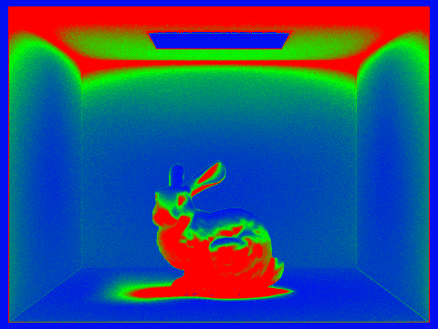
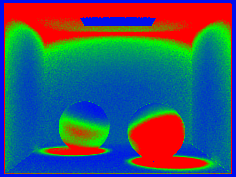
The rate maps show that sampling is spatially nonuniform. The directly visible emitter and black background require few samples because their radiance varies little. Much of the room also converges below the cap, while the ceiling surrounding the emitter, contact shadows, and darker portions of the objects require more samples to estimate indirect lighting. Geometry boundaries can require extra samples because jittered camera rays alternate between surfaces with different radiance. The final images retain smooth illumination while avoiding the cost of tracing 2,048 samples for every pixel. Some residual Monte Carlo noise is still possible under a finite cap and an approximate stopping criterion.
The project rebuilt successfully. Controlled tests verified that constant and black pixels stop at their first batch, a high-variance pixel reaches a non-batch-aligned cap, and an alternating zero/two-illuminance sequence converges at the analytically expected batch of 1,568 samples under a 5% tolerance. Further checks covered single-sample and zero-sample limits, a disabled batch check, numerical stability for large constant values, division by the actual count, and the sampling-count buffer. The Part 4 transport tests also passed after the update. Both scene images and their sampling-rate maps were visually inspected.
One extension is implemented from each of the assignment’s three challenge levels: surface-area-heuristic BVH splitting, bilateral denoising, and non-axis-aligned bounding boxes. The following sections describe the algorithms, demonstrate their effects, and state their limitations. All comparisons use original renderer outputs or the included synthetic geometry benchmark.
The median split balances primitive counts but does not directly minimize expected traversal work. The new builder places primitive centroids into 16 bins on each of the three axes. Prefix and suffix bounds and counts evaluate every nonempty bin boundary. It chooses the boundary minimizing A(left) × N(left) + A(right) × N(right), where A is bounding-box surface area and N is primitive count. Parent-area normalization and a constant traversal cost would not change which split wins. This implementation retains the four-primitive leaf cap rather than using SAH to decide when to stop building. Degenerate or empty partitions fall back to median splitting.
Measurement: cow, beetle and teapot are rendered at 480 × 360, 64 samples/pixel, one thread, adaptive sampling disabled and maximum depth zero. This isolates camera visibility and BVH traversal, not full global illumination. Each configuration runs three times on the Apple Silicon Mac with one worker; the table reports median construction and rendering times from the final audited code. Build time is separate from render time. The reference is the original median builder; SAH uses the same ray and primitive intersection code.
| Scene | Builder | Build (ms) | Render (s) | Tests/ray | Speedup vs median |
|---|---|---|---|---|---|
| cow | median | 1.60 | 1.5030 | 3.128 | 1.00× |
| cow | sah | 2.70 | 1.3116 | 2.628 | 1.15× |
| cow | obb | 3.60 | 1.3213 | 2.405 | 1.14× |
| beetle | median | 2.00 | 1.6675 | 3.772 | 1.00× |
| beetle | sah | 3.70 | 1.4387 | 2.204 | 1.16× |
| beetle | obb | 4.70 | 1.4534 | 2.071 | 1.15× |
| teapot | median | 0.60 | 1.9605 | 4.179 | 1.00× |
| teapot | sah | 1.00 | 1.4438 | 3.229 | 1.36× |
| teapot | obb | 1.40 | 1.4657 | 2.964 | 1.34× |
SAH improves measured rendering speed by 1.15× on cow, 1.16× on beetle and 1.36× on teapot. It reduces primitive tests by grouping geometry into bounds with lower expected overlap, at the expense of more construction work. These timings are workload-specific. The OBB rows are included to make the Level 3 comparison on ordinary meshes explicit: fewer primitive tests do not necessarily compensate for the cost of transforming rays.
Correctness: all three modes pass 5,000 seeded random mixed sphere/triangle rays against brute-force closest-hit and any-hit queries, including interval clipping, flat and empty bounds, equal centroids and leaf coverage. No geometry is dropped when a split degenerates.
The denoiser filters the completed linear HDR radiance buffer before display conversion. For a center pixel p and neighboring pixel q, its weight is exp(−||p−q||²/(2σs²)) × exp(−||C(p)−C(q)||²/(2σr²)). The output is the normalized weighted color sum over a 9 × 9 neighborhood, with spatial sigma 2 pixels and range sigma 0.15 in linear RGB. Boundary neighborhoods are truncated and renormalized. The filter reads an unchanged input buffer, preventing scan-order feedback. The command-line option -D saves a separate denoised PNG and preserves the original render.
Both examples use 16 camera samples/pixel, depth 5, accumulated radiance, Russian Roulette, SAH and disabled adaptive stopping. The bunny uses one sample per area light; the spheres use four. References use 1,024 samples/pixel with the same scene, camera, depth and light-sample counts. The bunny reference uses deterministic depth termination and the spheres reference uses Russian Roulette; both estimate the corresponding finite-depth radiance. References retain finite Monte Carlo noise. Error below is mean squared error across all display-RGB channels scaled to [0,1], not linear-radiance error. Postprocessing timing includes filtering, display conversion and filtered-PNG encoding, but excludes path tracing.
| Scene | Raw MSE | Filtered MSE | Reduction | Postprocess (ms) | Samples/pixel |
|---|---|---|---|---|---|
| Bunny | 0.001317 | 0.000740 | 43.8% | 74.3 | 16 |
| Spheres | 0.001472 | 0.000692 | 53.0% | 70.5 | 16 |

The filter removes much of the grain on walls and broad object surfaces while retaining the high-contrast silhouettes and emitter boundary. It does not recover all detail of the reference: the bunny’s small features and shadow transitions become softer, and low-frequency blotches remain. This is a biased image-space estimator; color similarity alone cannot distinguish a true low-contrast edge from noise. Geometry or normal guidance could help but is not implemented. A synthetic noisy step test reduced MSE to 3.1% of the input value while keeping the two boundary pixels on their respective sides of the intensity step. Additional checks cover constant images, single pixels, boundaries, zero radius and finite output.
The OBB mode keeps the SAH hierarchy and constructs a candidate local orthonormal frame at each node from its longest nondegenerate triangle edge and the corresponding triangle normal. This is a geometry-based orientation heuristic, not a minimum-volume or principal-component fit. Triangle vertices are projected directly; spheres use projected centers plus/minus their radii, and other primitives conservatively project their world-box corners. A small scale-dependent padding guards against numerical boundary loss. A candidate is selected only when its surface area is below 80% of the world AABB area; otherwise the node keeps its AABB.
Intersection transforms the ray origin and direction into the node’s local frame and uses the existing slab test. The transformed direction is not normalized, so the same t values and min/max interval remain valid. Child traversal still visits the nearer bound first and clips against the closest primitive hit. World AABBs remain available for the existing GUI visualization. Storing both bounds and the frame adds per-node memory, and each selected OBB adds dot products to its intersection test.
Demonstration scene: 128 long, thin parallel slats (256 triangles) rotated in three dimensions. Their world AABBs overlap heavily, whereas locally oriented boxes fit their narrow widths. The included benchmark compares median AABBs, SAH AABBs and SAH with selected OBBs using 200,000 seeded rays with direction (0,0,−2). Every result is checked against brute force, including closest-hit distance. Three repetitions are timed; each mode uses exactly the same rays. This is a synthetic traversal benchmark, not a full-lighting render.
| Mode | Build (ms) | Trace (s) | Tests/ray | OBB nodes | Rays |
|---|---|---|---|---|---|
| Median | 0.0188 | 0.09308 | 73.766 | 0 | 200,000 |
| SAH | 0.0514 | 0.09556 | 73.766 | 0 | 200,000 |
| SAH + OBB | 0.0703 | 0.01601 | 1.545 | 127 | 200,000 |
Relative to SAH AABBs, selected OBBs reduce primitive tests from 73.767 to 1.545 per ray (47.75× fewer) and median traversal time from 0.09556 s to 0.01601 s (5.97× faster). All closest hits agree with brute force, and the three diagnostic images are byte-identical. This satisfies the requested demonstration of a scene benefiting from non-axis-aligned bounds. On the ordinary meshes in the Level 1 table, OBBs provide little or no additional rendering benefit because their tighter bounds are offset by transformation overhead. They are therefore optional.

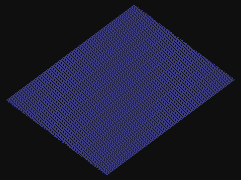
Use -B median, -B sah or -B obb to select the builder, and -D to save the filtered result. Defaults remain median and no denoising. EXTRA_CREDIT.md in the code repository records full render commands and the optional CMake test targets. The submitted tests include the portable rotated-slat benchmark, which writes timing data and diagnostic images in its working directory. The final audit also corrected shared starter-code random state and counters: workers now use distinct thread-local generators and atomic BVH counters. An eight-worker test and scene render passed. Earlier stochastic figures retain their recorded noise patterns; the estimator distributions are unchanged.
Assignment options: CS184 HW3 extra credit. SAH background: Physically Based Rendering, Bounding Volume Hierarchies. Bilateral-filter background: Tomasi and Manduchi, Bilateral Filtering for Gray and Color Images (1998).